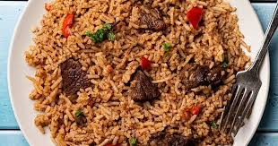

Home

Pilau
Description
Pilau is a flavorful rice dish popular in East Africa, especially in Kenya and Tanzania.
It is made by cooking rice with a blend of spices, meat, and vegetables, resulting in a fragrant and delicious meal.
Ingredients
- 2 cups basmati rice
- 4 cups water or broth
- 1 lb beef or chicken, cut into pieces
- 2 onions, finely chopped
- 3 cloves garlic, minced
- 1 tbsp ginger, grated
- 2 tomatoes, chopped
- 2 tbsp pilau masala spice mix
- 1 tsp cumin seeds
- 1 tsp cardamom pods
- 1 cinnamon stick
- 2 tbsp oil
- Salt to taste
Instructions
- Rinse the basmati rice under cold water until the water runs clear. Drain and set aside.
- In a large pot, heat the oil over medium heat. Add the cumin seeds, cardamom pods, and cinnamon stick. Sauté for about 1 minute until fragrant.
- Add the chopped onions and sauté until golden brown.
- Add the minced garlic and grated ginger, and cook for another minute.
- Add the meat pieces and cook until they are browned on all sides.
- Add the chopped tomatoes and cook until they soften.
- Add the pilau masala spice mix and salt. Stir well to coat the meat and vegetables with the spices.
- Add the rinsed rice to the pot and stir to combine.
- Pour in the water or broth, bring to a boil, then reduce the heat to low. Cover the pot and let it simmer for about 20-25 minutes, or until the rice is cooked and the liquid is absorbed.
- Remove from heat and let it sit, covered, for an additional 5 minutes.
- Fluff the rice with a fork before serving. Enjoy your pilau!